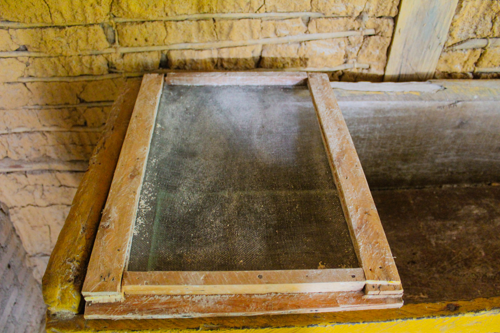

Esse site foi criado afim de promover
fotos tiradas da linda
ilha de boipeba mostrando as suas riquezas culturais
Pousada Alma viva
A casa onde a Almaviva foi construída é bastante
conhecida na comunidade por causa de sua
história
Na parede da pousada,até hoje
existe uma parte exposta da sua
construção que são pedras antigas
com óleo de baleia A integridade do local foi
mantida e seus objetos foram
preservados.
o museu é o maior
patrimônio público da ilha
de Boipeba ,foi construído
atravez de doações e até
hoje é um grande atrativo
da ilha.
No museu encontramos fósseis
de diversos animais marinhos.
O museu beneficia toda a
população principalmente
aqueles que trabalham com o
turismo
Casa de farinha
Há 60 anos a casa de farinha da ilha de
boipeba foi construida.A casa é simplesmente feita de pau-a-pique e barro
Local onde a mandioca era torrada
e preparada para ser peneirada. 
Peneira que era utilizada para que
a mandioca depois de
torrada,ficasse bem fina para
consumo da comunidade. Local onde a mandioca passava pelo processo de fermentação
Gastrônomia da ilha
A lagosta é um crustáceo
famoso em todo o mundo e é
bastante comercializado na ilha
de Boipeba.
Acima podemos ver um prato
típico da região, a moqueca de
lagosta
Pescaria na ilha
Artesão consturando rede
Alguns equipamentos
usados na pesca
Gaiola de siri
Como o própio nome já diz, a
gaiola de siri é utilizada
na captura do siri.Este é o munzuá,
instrumento de pesca
utilizado na captura de
camarão e mariscos A pesca de rede é uma das
modalidades de pesca
mais utilizadas na ilha,
com ela é possível
capturar peixes,siri e
camarão.
Moradores da ilha
Senhor Tavinho
conhecido por Mr cabeludo
Relatos de seu Tavinho
O museu foi construído quando
Sr.Tavinho tinha apenas 10 anos de
idade.
Hoje Sr. Tavinho tem seus 70 anos, isso
quer dizer que já faz 60 anos na
perseverança para tornar do seu museu
algo conhecido, mais como toda
batalha, não foi fácil para ele conseguir
o que tem hoje.
Ele veio de uma família muito
pobre,morava em uma simples casa de
taita.
Seu primeiro museu foi construído
depois de muita luta,através de doações
tentaram construir, mais infelizmente
não houve condições, então Sr tavinho
se deslocou da ilha onde mora para
correr atrás de emprestimos que paga
até hoje afim de expandir o seu museo.
Apesar de toda as dificuldades Sr
Tavinho com seu carisma não se
arrepende e está alegre e satisfeito por
receber em seu museu pessoas de todo o
mundo
Dona Maria
Dona Maria é uma moradora
nativa de
Cova de Onça ,cheia de
simpatia e com muitas histórias
dona Maria nos recebeu em sua
casa para ajudar em nosso projeto
Milton Santos
Esse é o Sr Milton, morador antigo da
praia Cova de Onça, situada no
extremo sul da ilha de boipeba .
O sr Milton tem muita história pra
contar, pois é um pescador experiente
e já viveu bastante aventuras no vasto
mar da ilha
Casal simpático de moradores de cova da onça
Israel
Esse é o Israel, morador de cova da onça que nos ajudou em nosso projeto


.jpg)
.jpg)
.jpg)
.jpg)